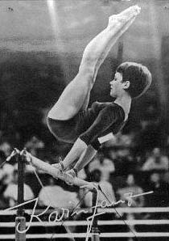

Karin Janz (GDR)
1969 European AA Champion
1972 Olympic V and UB Champion

Medal Total
Olympic
Games:
2 Gold, 3 Silver, 2 Bronze
World Championships: 1 Gold, 2 Silver
European Championships:
3 Gold, 2 Silver, 1 Bronze
Janz was born on February 17, 1952 in Berlin, the daughter of a teacher. She began gymnastics at age 10 at the Erweiterte Oberschule, where her first coach was Klaus Helbeck. After two years she was transferred to SC Dynamo Berlin, where she was coached by Jurgen Heritz (who also coached Maxi Gnauck) and Werner Pohland. Karin retired after the 1972 Olympics, studied medicine at Humboldt University, and is now an orthopedic surgeon. She was inducted into the International Gymnastics Hall of Fame in 2003.
Competition Results
1965
Jr. Friendship Tournament (Druzhba): 2nd AA, 1st
UB, 2nd V, 2nd B
1966
Jr. Friendship Tournament (Druzhba): 1st Team, 1st AA, 1st UB, 2nd
V, 3rd B
1967
DTV Cup: 1st AA
European Championships: 4th AA, 2nd UB, 3rd
V, 4th B
GDR Championships: 1st AA, 1st UB, 2nd V, 2nd B, 3rd FX
GDR Club Championships: 1st Team, 2nd AA
GDR-ROM Dual Meet: 1st Team, 1st AA
GDR-POL Dual Meet: 1st Team, 1st AA
GDR-SWE Dual Meet: 1st Team, 3rd AA
GDR-USSR Dual Meet: 1st Team, 5th AA, 1st UB, 2nd V
Pre-Olympics: 7th AA
1968
DTV Cup: 1st Team, 2nd AA
GDR Championships: 2nd AA, 1st V, 1st UB, 2nd FX,
6th B
GDR-BUL Dual Meet: 1st Team, 2nd AA
GDR-FRA Dual Meet: 1st Team, 1st AA
GDR-SWE Dual Meet: 1st Team, 2nd AA
Olympics: 3rd Team, 6th AA, 2nd UB,
4th B
1969
DTV Cup: 1st AA, 1st V, 1st UB, 1st B, 1st FX
European Championships: 1st AA, 1st V,
1st UB, 2nd FX
GDR Championships: 1st AA, 1st V, 1st UB, 1st B, 1st FX
GDR-SWE Dual Meet: 1st Team, 1st AA, 1st UB, 1st BB, 1st FX, 2nd V
GDR-JPN Dual Meet: 1st Team, 1st AA, 1st V, 1st UB, 1st B, 1st FX
USSR-GDR-ROM Meet: 1st Team, 2nd AA, 1st V, 1st UB, 1st B, 2nd FX
1970
GDR Championships: 1st AA
USSR-GDR: 2nd Team, 2nd AA, 1st V, 1st UB, 2nd B, 2nd FX
World Championships: 2nd Team, 4th AA, 1st
UB, 2nd V, 4th FX
1971
Dynamo Spartakiade: 1st Team, 1st AA, 1st V, 1st UB, 1st B, 1st FX
1972
Chunichi Cup: 1st AA
Olympics: 2nd Team, 2nd AA, 1st V,
1st UB, 3rd B, 4th FX
This page was created on August 10, 2003
and was last updated on October 01, 2021.
© Gymn Forum